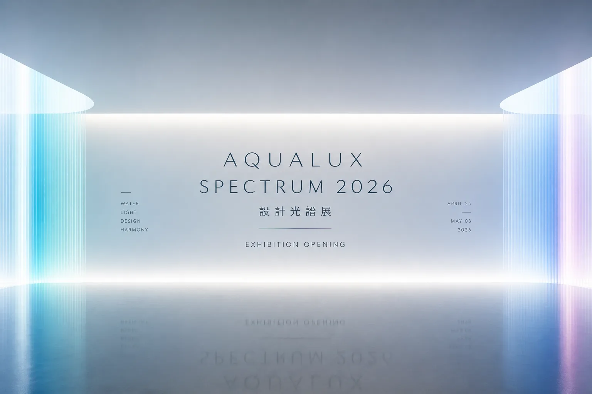
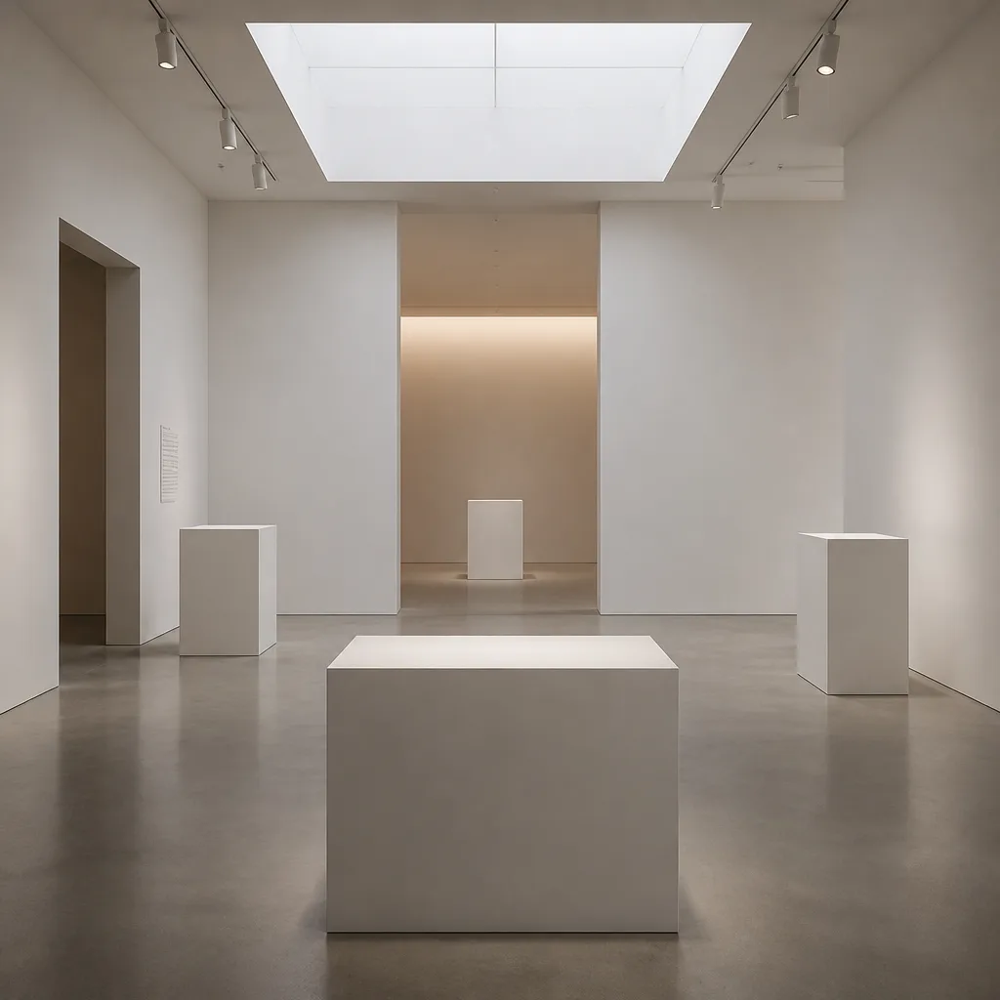
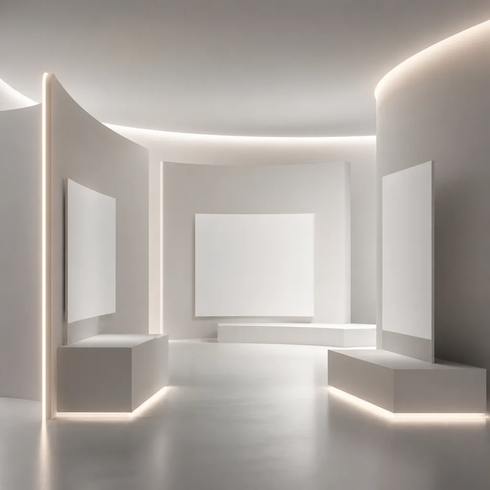
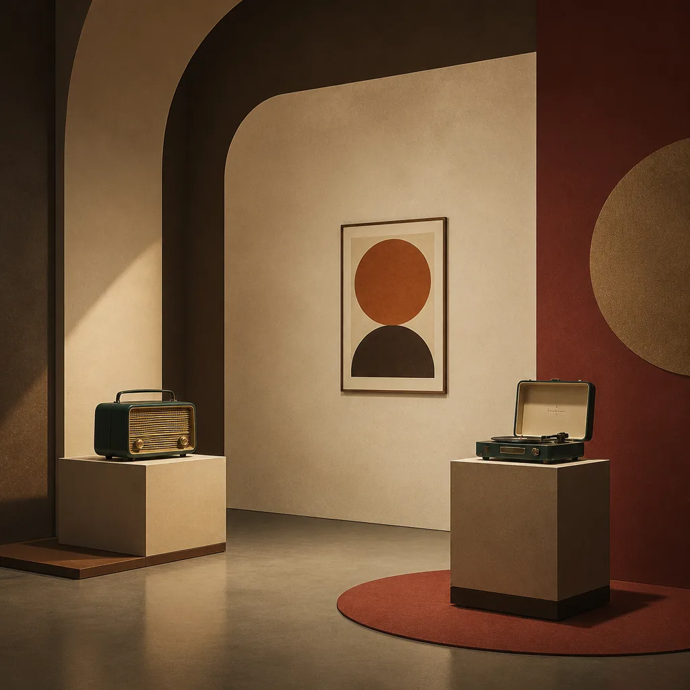
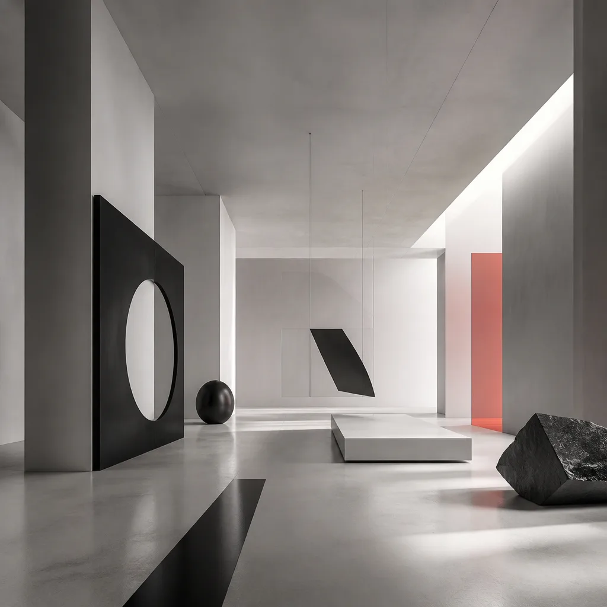
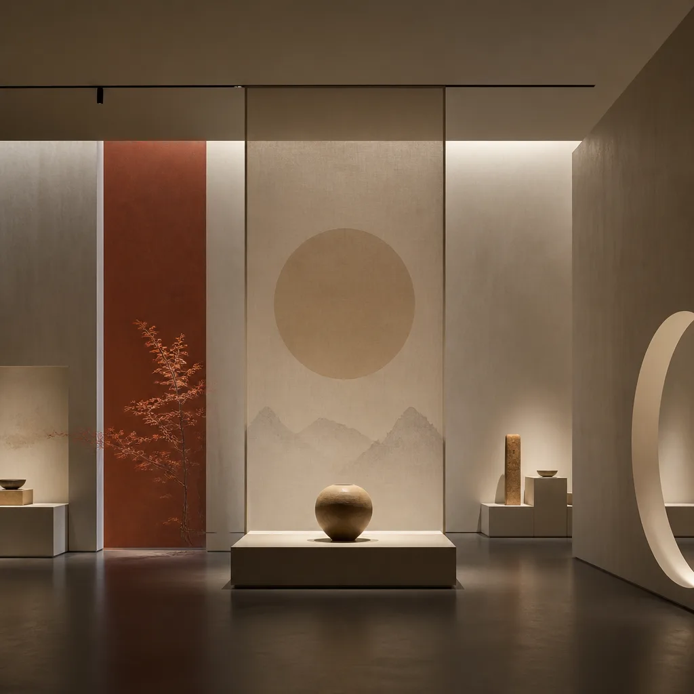
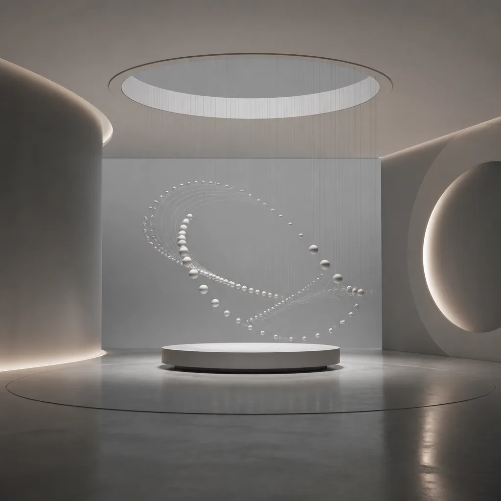

C04 — Minimalism
極簡主義
本質的迴響
在資訊過載的時代，極簡主義不僅是一種風格，更是一種哲學。它剝離冗餘，聚焦核心，在留白中尋找秩序與和諧。 此次展覽，我們探索設計如何透過 精煉的語彙、純粹的形態，以及 深思熟慮的佈局，呈現超越視覺的感官體驗。
策展論述 Curatorial Statement
在設計的廣闊光譜中，極簡主義以其獨特的靜謐與力量，引導我們回歸事物的本質。它不是空無一物，而是 深思熟慮後的選擇與捨棄，每一次的減法，都旨在放大核心價值，讓形式服務於功能，並在簡潔中蘊藏豐富的意涵。
本次「極簡主義：本質的迴響」展覽，旨在呈現設計師們如何透過 嚴謹的排版、精準的線條、以及 豐富的留白，構築一個個純粹而富有表現力的作品。我們相信，真正的美學，往往存在於最簡約的表達之中。
「少即是多。」—— Mies van der Rohe
極簡主義的精髓，在於透過最少的元素，傳達最深刻的訊息。
展覽將引導觀眾體驗一種 寧靜的沉浸感，在作品與空間的對話中，重新審視設計的意義。我們將見證，當設計褪去繁冗的外衣，其內在的秩序與和諧，將如何清晰地迴響。
設計師名單 Featured Designers
D_001
吳珮 Paper Wu
Editorial / Minimal
D_002
陳格 Grid Chen
Swiss / Grid
D_003
李墨 Ink Lee
Typography / Minimal
D_004
林靜 Quiet Lin
Zen / Negative Space
D_005
王純 Pure Wang
Clean UI / Sans Serif
D_006
許白 White Hsu
Monochromatic / Subtle Texture
D_007
鄭簡 Simple Cheng
Functional / Clarity
D_008
黃空 Void Huang
Empty Space / Composition
D_009
蔡素 Plain Tsai
Unadorned / Essential
D_010
張序 Order Chang
Systematic / Structure
D_011
彭淨 Clear Peng
Transparency / Lightness
D_012
趙無 Wu Chao
Absence / Form
場地資訊 Venue Map

松山文創園區 5 號倉庫，作為本次展覽的場地，其簡潔的工業風格與開闊的空間， 為極簡主義作品提供了完美的背景，讓每一件設計都能在光線與留白中自由呼吸。
五大展區 Exhibition Zones

Z01
主流頻譜
Mainstream Frequency
探索極簡主義在主流應用中的實踐，如何將複雜的訊息轉化為清晰直觀的體驗。
5F-A1, 5 Works

Z02
時光殘響
Retro Echo
回溯極簡主義的歷史脈絡，從傳統美學中汲取精華，展現其跨越時代的永恆魅力。
5F-A2, 6 Works

Z03
前衛實驗室
Avant Lab
展示極簡主義在當代藝術與科技領域的前沿探索，挑戰傳統邊界。
5F-B1, 6 Works

Z04
文化光譜
Cultural Spectrum
探討極簡主義如何與不同文化語境融合，呈現多元而統一的設計表達。
5F-B2, 5 Works

Z05
動態廳
Motion Hall
透過動態影像與互動裝置，呈現極簡主義在時間與空間中的流動之美。
5F-C1, 15 Works
講座排程 Schedule
| Time | Event | Speaker | Location |
|---|---|---|---|
| 12.07 (Sat) 14:00 | 極簡設計的哲學 | 吳珮 Paper Wu | 動態廳 |
| 12.08 (Sun) 16:00 | 網格系統與秩序 | 陳格 Grid Chen | 前衛實驗室 |
| 12.14 (Sat) 14:00 | 字體排印的藝術 | 李墨 Ink Lee | 主流頻譜 |
| 12.15 (Sun) 16:00 | 留白中的力量 | 林靜 Quiet Lin | 時光殘響 |
| 12.21 (Sat) 14:00 | 本質設計論壇 | 策展人 Jerry & All Designers | 動態廳 |
票務資訊 Tickets
Special Offer
全展期通票
一張票，無限次探索設計光譜的奧秘。 憑通票可自由進出展覽期間所有展區，並享有周邊商品折扣。
Basic
SINGLE PASS
單日入場
NT$ 480
per person
- 展區單日入場
- 電子導覽手冊
- 限定明信片一份
Recommended
FULL ACCESS
全展期通票
NT$ 1,280
per person
- 展區全期無限次入場
- 電子導覽手冊
- 限定設計海報一張
- 周邊商品 9 折優惠
Premium
CURATOR PASS
含 Workshop
NT$ 2,880
per person
- 展區全期無限次入場
- 電子導覽手冊
- 限定設計海報一張
- 周邊商品 85 折優惠
- 策展人導覽 Workshop